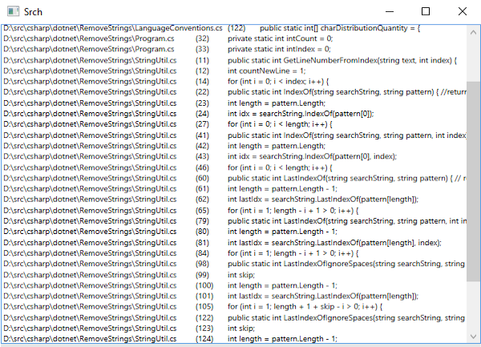

SrchA code searching tool for windows.  |
MadocMark down converter and formatter.
|
WordcloudA wordcloud generator for GTK 2+.
|
HelpersSmall helper scripts written in Python.
|
CallstackThis C# script creates a calltree of all calling functions that call the named function.
|
IoHooksThis C# script attaches itself to the mouse and keyboard input and output.
|